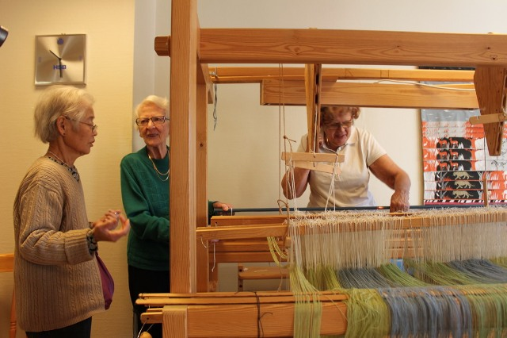
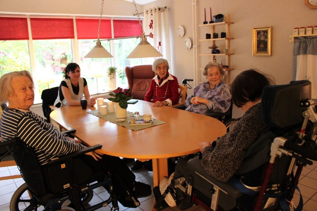
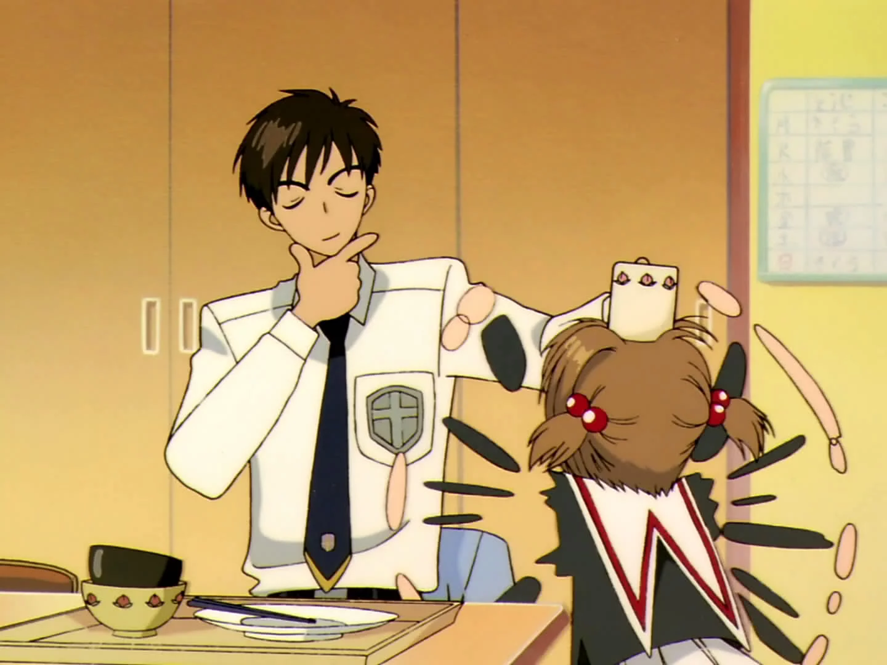
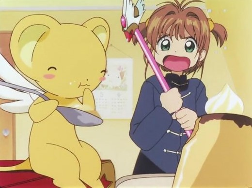
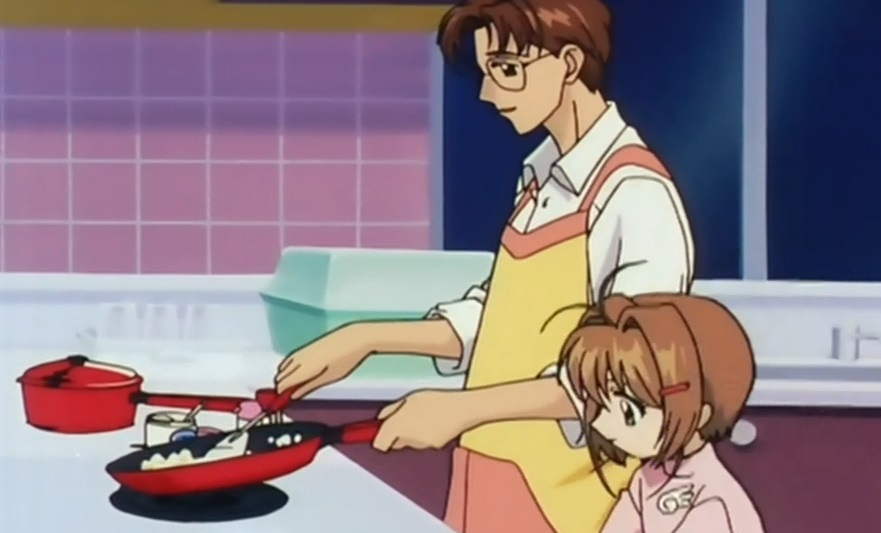
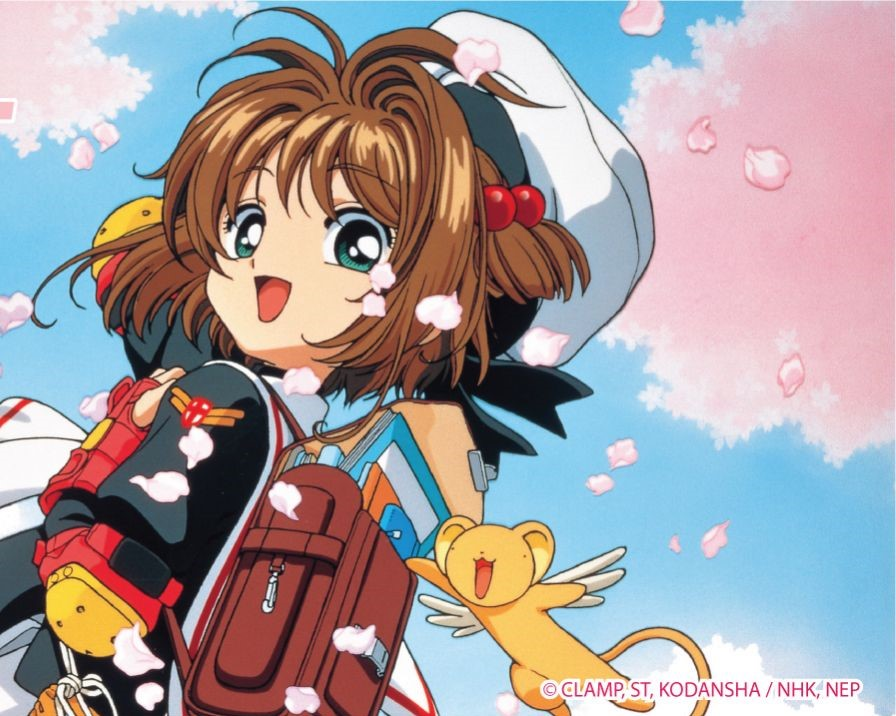

瑞典有許多標籤：她是令人心嚮往之的福利國老人天堂，也是讓人望之卻步的高稅收國家。 近十年，筆者兩度到瑞典參訪斯德哥爾摩、延雪平、隆德三個城市的公共長照服務設施。走在瑞典街頭，踏入瑞典老人活動場所，觀察瑞典老人生活樣貌會發現：瑞典社會對老年生活的思維，大大顛覆了我們對「老」的既定想像。這，才是包裹在社會福利制度之內，支撐著這個老人天堂的核心。 旅程中，我們有四個發現：
最大的體現，就是「不與子女同住」的文化，但他們活得並不如我們想像的孤單。 在延雪平市的老人公寓裡，我們訪問到一位移民瑞典的日本老太太。瑞典丈夫過世之後，她因無法獨自整理有庭院的房子，而將房子賣掉。她並沒有選擇搬去跟女兒住，而是改買一戶空間無障礙的老人公寓，延續自己安排生活的習慣。 她積極地上電腦課，學習跟女兒視訊，也常到老人公寓頂樓跟朋友聊天織布。這裏有她的朋友與社交活動，她覺得很自在。
瑞典老人希望誰照顧他們呢？不是家人，而是政府。 我們訪問到一位做居家照顧員的中年女性。她92歲的媽媽，20年前開始需要照顧；即便女兒的工作就是居家照顧員，她們也不叫女兒回來照顧，而是請市政府派居家照顧員。 問她為什麼不自己照顧媽媽？她說，使用政府的服務，她才能跟媽媽愉快相處，而不會被沉重的照顧負擔壓得喘不過氣來，反而將親情磨損殆盡。 然而，不住在一起或親自照顧，並沒有使瑞典的家庭關係變得疏離。他們經常家庭聚會，住在不同城市的父母子女也會彼此了解關心。相對於被孝道綑綁的亞洲家庭，瑞典人更重視家人相處的「質」，而非朝夕見面的「量」。
筆者在三個城市看到許多因應高齡社會的設施：從「老人聚會中心」「老人（無障礙）住宅」「失智症日間照顧中心」到「特殊老人住宅」（台灣俗稱的養護中心），一路從健康的老人看到生病的老人。 但即使在健康情況最差的特殊老人住宅，也很少看到臥床者。即使是需要護理人員看護的老人，若健康情況許可，仍會推著助行小推車行走，或坐在輪椅上自己滑行。儘管這個現象早已透過媒體報導得知，但親眼看到時，仍然很震撼。 瑞典老人臥床率低的原因，其實很簡單。 首先，是避免老人「被加速退化」。瑞典的照顧理念與輔具發展，都是朝向「幫助老人發揮他還有的能力」而設計，例如只要老人的雙手還有力氣，就會裝設讓他可以用手使力，幫助自己移動身體的輔具。 這樣就不會取代人的能力，令老人有尊嚴、有自主性，不會使他們覺得自己無用。
其次，就是「不過度醫療化」。我們參訪全球知名的瑞典皇后所開辦的失智症老人研究暨照顧中心時，就講到這個觀念。 護士出身的失智症教育中心主任問我們：「當人失去吞嚥能力時，你會怎麼做？」 在台灣、日本等東亞儒家文化的國家，會選擇做胃造口或裝鼻胃管強迫餵食，用人工補充營養為高齡者延命。但瑞典人的生死觀是「不過度以醫療延命，讓人有尊嚴地生活」，因此，當病人無法自己進食，就是該讓生命依照自然的法則離開的時候。 另一個原因是，用管路強迫進食，很容易因胃食道逆流，導致異物進入氣管而演變成吸入性肺炎，最後只好用靜脈注射來補充營養，變成活不好也死不了的痛苦無限輪迴。 在瑞典人眼中，這種延命無疑是另一種虐待。因此強烈質疑：這樣做，是為了病人，還是家屬呢？ 2007年，日本醫生宮本顯二與宮本禮子，為找出歐美國家臥床率遠低於日本的原因，親自到瑞典找答案，寫出《不在病床上說再見》一書。 他們在書中文中提出一個令人吃驚的數據：儘管日本拚命以醫療方式延命，平均壽命也不過比瑞典老人多了2.6歲。這個事實，帶出我們觀察到的第三個現象。
先看幾個統計數據： 2016年，台灣女性「健康平均餘命」是73.8歲，男性是68.7歲。瑞典女性則是73.3歲，比台灣低了0.5歲；但瑞典男性則是73.0歲，比台灣高了4.3歲，更比歐盟國平均值63.5歲高出9.5歲，是世界級的優等生。 更漂亮的數字來了。瑞典衛福部統計，男性第一次中風的常見年齡，從90年代的75歲延遲到81歲，遠優於世界各國。 瑞典政府並沒有因此自滿，為了因應更嚴峻的挑戰──推估2050年，瑞典人平均餘命會再增加2.6歲──政府與整個社會都已經動員起來，要讓延的這2.6歲成為「健康餘命」。 反觀台灣，2015年全球疾病負擔評比結果顯示，台灣的關鍵慢性病，包括腎臟病、糖尿病、中風，防治遠不及格。雖有傲視全球的健保大數據，卻並無統計男女第一次中風的年齡，因此也沒有發展出有效的預防對策。 現有數據只能看出，近年來，台灣男性中風住院者的年齡有年輕化的趨勢，55-64歲中風人數明顯增加。 中年就中風，家庭的照顧負擔豈能不大？如果你是一個精打細算的政府，看完這組數字應該要想到：台灣人長壽但高失能、高失智，健保與長照財務都很危險。
許多人對福利大國的印象是「繳稅不手軟，撒錢也不手軟」，但長期生活在瑞典的觀察家吳媛媛指出，事實上，瑞典人非常精打細算；只有精算過有效的政策，才會投入預算不手軟。 瑞典政府投入很多預算，來促進國民健康與壓縮失能，這會省非常多錢。說到底，做長照，其實就是在算錢，而健康的人民，最省錢！。 值得留意的是，瑞典的各式福利均以稅收作為財源，並未開辦社會保險（例如德、日等國開辦的「長照保險」）。整個社會養成量力（財力）而為、不可透支（債留子孫）的觀念，體認「天下沒有免費、也沒有保證吃多少」的午餐，自然就不會設計出「養不起的老人天堂」。
繼續閱讀－－「老人天堂」瑞典的四個發現（下）：再忙也要喝咖啡！fika文化為何使人長壽又健康？「隱藏著黑暗力量的鑰匙啊，在我面前顯示你真正的力量！與你定下契約的小櫻命令你，封印解除！」這句日本動畫《庫洛魔法使》的經典台詞，絕對是一代人的集體記憶。然而，曾經坐在電視前的小孩已變成大人，少年亦成為父母，今天也許覺得動畫只是小朋友的玩意，卻未曾發現當中蘊含著各種生命哲理。所以，今天我要從小櫻的家人（哥哥木之本桃矢、爸爸木之本藤隆、守護者小可－可魯貝洛斯）著手，重新思考《庫洛魔法使》（下簡稱《庫》）的家庭心理學。
人們常常說，「為了（某人），要我作出犧牲也願意」，這斷言當然渲染力十足，但是在關係上，也許是剛好反過來。
在《庫》第 65 集中，為了不讓雪兔（假面目，實為守護者，月）因魔力不足而消失，桃矢決定把自己的魔力全部轉給阿月，但這樣做的話，他自己便無法再感知小櫻周遭的危險，所以他要求月得好好保護小櫻。當冷酷的月回應：「我沒有必要答應你，我變成這個身份，便會保護主人。」桃矢生氣地說：「就算你變身了又怎樣？！你消失的話，雪兔也會消失，你要守護小櫻，就要守護自己的身體！」月愣住，卻明白了這個道理。
桃矢知道小櫻最喜歡的人是雪兔（當然他自己也是），因此，他（以犧牲魔力的方式）更要守護月，教懂月「要守護重要的人，就要先學會守護自己」這個悖論般的道理，才能守護他最愛的妹妹。（推薦閱讀：【遲來的守護者】愛，永遠不會錯過）
在臨床上，如果孩子知道因為自己太調皮，讓照顧者（父母）累壞，或父母因照顧自己而深深挫敗與失望，那事實上，只會讓小孩感到無比愧疚，並會因為害怕自己的壞而壓抑起來。因此，一個生氣勃勃（aliveness）、不會因為照顧小孩而「壞掉」的、能夠持續地「做他自己」（going on being himself/herself）的照顧者，才是小孩真正需要的 [1]。這讓我想起有一次摔車後，我簡單包紮後不願請假，卻繼續趕到機構給個案諮商，事後，某位資深的前輩溫柔地提醒了我：「你很努力，個案也很感動，可是，個案其實也不會希望看到『掛掉的媽媽』呢～」
面對殘酷的事實，不論是從坊間的心靈導師還是直面真理的哲學家，也許都只會鼓吹勇敢面對！這在理智上都沒有錯，然而，心理治療工作者會進一步考慮到當事人的身心狀態，在適當時的時機才道出真相，或思考該以怎樣的方式道出，以及道出後能如何去面對等等。
許多重大事件，小可其實都清楚得很，卻不曾把「將庫洛牌改變成小櫻牌時，小櫻因魔力不足，無法支撐雪兔（月）繼續存在」一事提前告訴小櫻。小可的選擇，其實是建立在牠對小櫻身心狀態的謹慎考慮，以及對揭示真相之際，相信那時候的小櫻已經能夠應對的判斷上！
同樣在《庫》的第 65集，當小櫻問為何不提前告知她雪兔可能會消失一事時，小可說：「因為我不想看到妳像現在一樣傷心。要是我一早說了，你就會很傷心，責怪自己的魔力不足，妳可能為了處理問題而勉強自己，所以我和雪兔決定甚麼都不告訴妳。」而當小櫻開始自責，總是要依靠小可的保護時，小可又說：「這不是叫保護！妳也說過，不是要做甚麼主人，而是希望當好朋友，所以我們時時處處為你著想，也是很正常的！」
在小孩健康的成長過程中，除了夠好的父母之外，其實也需要一位交心互助的朋友。在臨床上，這位夠好的朋友提供的成長力量，有時候足夠彌補父母缺失的遺憾──小櫻的母親（天宮撫子）在她三歲時便離世──換言之，這位恆常在場（constant presence）的朋友，在某種意義上成為了替代的童年照顧者[1]。因此，除了二人間的友誼外，我們也會發現平時傻氣十足的小可，在某些關鍵時刻會變得十分成熟，如同小櫻的長輩般給予最窩心的教導與照顧。
想到我們對父母的記憶，他們常常不是管太多，就是該管不管；相對的，當父母的在教養上，也常常進退失據，不知道自己該不該管。其實這現象可能在於對自身焦慮的涵容，了解自身的角色與責任，以及對小孩子自由發展的信任。（推薦閱讀：《小王子》心理學：守護你心中最純真的夢想）
觀眾對小櫻爸爸藤隆的印象，一般都是個溫柔的男士，他每天早上更換飯廳那張已故妻子的照片，並在繁忙的工作外，給家人煮好早餐。但終究他的角色不太重要，因為他不會魔法，亦不像桃矢般有靈異體質。然而，到了 2018 年最新的《庫洛魔法使：透明牌篇》第 21 集，爸爸藤隆不經意地揭露說，他不只知道撫子擁有不可思議的力量，理解桃矢能看見沒有形體的東西，也大概察覺到小櫻從國小四年級（成為魔法少女）開始發生了很多事，有著許多辛苦的經歷。
藤隆為何一直保持沉默？他說：「我是無法感知或聽到的人⋯⋯所以我也無法理解小櫻⋯⋯因為我知道那是我無法解決的事」，他雖然沒有任何特殊能力，但他深信小櫻是可以成功幫助自己與他人，並一一解決困難的！而且，他也知道在他力有不逮之處，桃矢是有能力幫忙小櫻的。
藤隆顯然判斷正確，因為自知無力時，卻在無力處的四周繼續盡己所能地幫忙所愛的人，就是桃矢──在《庫》第 61 集中識破由「鏡」牌冒充的小櫻時，他明白現在只能夠讓小櫻獨力去解決危險，而自己「假裝不知道」便是最大的幫忙，並感謝「鏡」一再協助小櫻。
往往在一段日子的經歷後，我們把心中的想法告知父母，而他們居然說出：「我是你爸媽，怎可能不知道呢！」也不是沒有道理的。或者是說，在孩子生長的路上，本來有很多事情父母就不要盲目點破──難道當孩子糾結於鋼琴曲子沒彈好，父母就馬上給建議／換老師／熱心陪練／潑冷水？不論父母會不會彈琴，這時候最好的做法就是看著孩子慢慢探索，找到自己的答案。又比如在發現孩子已經長大，開始會自慰時，難道家長要裝起一副開明的樣子：「來！孩子，我現在來跟你談談自慰的問題。」不！這對孩子來說只會造成過度入侵的不安。
藤隆知道甚麼是他所不能為孩子解決的，因此他做的是安頓、涵容、管理自身的焦慮，並了解自身的角色與責任──做好每天的早餐，在小櫻需要依賴時給予最強的後盾──以及信任孩子的自由發展。意即，父母如果真實地了解孩子的特質，看見他們的優勢，他便能夠「信任他自己」該對小孩的事介入多少、在甚麼情況下才介入、以怎麼的方式介入。
孩子自由地成長與發展是十分重要的，它會帶出人們心中最美好的東西 [2]。面對一次又一次的困境與挑戰，從收集庫洛牌→小櫻牌→透明牌，小櫻就像一位藝術家，一再突破舊形式與創造新的作品。我們看見她的努力與自信，記得她總是跟自己說「絕對沒問題的！」。
然而，小櫻的自信不是源自只會叫人「相信自己」的心靈雞湯，而是一種能夠控制與克服內心的不安，並充份信任自己和他人的實在力量。小櫻的自信是從上述家人的支持性環境中萌生的，這家庭的好條件，醞釀了能自我控制的安全感。在此基礎上，也就是被保護、被相信、於自由的發展下，她能夠（所謂的主角光環）真實地信任自己與他人，並以創造力的方式面對生命的困境 [3]。
《庫洛魔法使》的家庭，體現了精神分析師 Winnicott 眼中家庭為人們的成長所作出的兩個重要貢獻 [2][3]：
持續地為孩子保持高度依賴的機會，並在此基礎之上 為孩子提供脫離家庭，以走向外界發展的機會，於朝向獨立的路上創造屬於自己的認同與價值。 如果幸運，我們也能夠像小櫻一樣說出那句「絕對沒問題的！」。而若內心的安全感和自信還不足夠，在試著找心理師諮商之前，我認為好好地把《庫》重新「封印解除」一遍，也是一件很療癒的事。
後記：我知道《庫》的小說與動畫在內容上有所出入，但這篇文章只根據動畫劇情來寫，因此，我作為非專業的櫻粉，只能請求嚴謹的櫻粉手下留情。另外，編輯部說如果反應不錯，就會繼續這個單元，而我則是希望下次能夠書寫《庫》裡頭多元又豐富的愛情觀。
參考資料：
[1] Winnicott, D. W. (2002[1963]). From dependence towards independence in the development of the individual. In The maturational processes and the facilitating environment (pp. 83-92). Karnac.
[2] Winnicott, D. W. (2006[1960]). The family and emotional maturity. In The family and individual development (pp. 128-138). Routledge.
[3] Winnicott, D. W. (2006[1960]). On security. In The family and individual development (pp. 42-47). Routledge.
講完了牛郎織女的故事，細看兒子已經垂睫睡去，女兒卻猶自瞪著壞壞的眼睛。忽然，她一把抱緊我的脖子，把我贅得發疼：
「媽媽，你說，你是不是仙女變的？」
我一時愣住，只胡亂應道：
「你說呢？」
「你說，你說，你一定要說。」她固執的扳住我不放。「你到底是不是仙女變的？」
我是不是仙女變的？那一個母親不是仙女變的？
像故事中的小織女，每一個女孩都曾住在星河之畔，她們織虹紡霓，藏雲捉月，她們幾曾煩心掛慮？她們是天神最偏憐的小女兒，她們終日臨水自照，驚訝於自己美麗的羽衣和美麗的肌膚。她們久久凝注著自己的青春，被那份光華弄得癡然如醉。
而有一天，她的羽衣不見了，她換上了人間的粗布──她已經決定做一個母親。有人說她的羽衣被鎖在箱子裡，她再也不能飛翔了，人們還說，是她丈夫鎖上的，鑰匙藏在極秘密的地方。
可是，所有的母親都明白那仙女根本就知道箱子在那裡，她也知道藏鑰匙的所在。在某個無人的時候，她甚至會惆悵地開啟箱子，用憂傷的目光撫摸那些柔軟的 羽毛。她知道，只要羽衣一著身，她就會重新回到雲端，可是她把柔軟白亮的羽毛拍了又拍，仍然無聲無息地關上箱子，藏好鑰匙。
是她自己鎖住那身昔日的羽衣的。
她不能飛了，因為她已不忍飛去。
而狡黠的小女兒總是偷窺到那藏在母親眼中的秘密。
許多年前，那時我自己還是一個小女孩，我總是驚奇地窺伺著母親。
她在口琴背上刻了小小的兩個字──「靜鷗」，那裡面有什麼故事嗎？那不是母親的名字，卻是母親名字的諧音，她也曾夢想過自己是一隻靜棲的海鷗嗎？她不 怎麼會吹口琴，我甚至想不起她吹過什麼好聽的歌，但那名字對我而言是母親神秘的羽衣。她輕輕寫那兩個字的時候，她可以立刻變了一個人，她在那名字裡是另外 一個我所不認識的有翅的什麼。
母親曬箱子的時候是她另外一種異常的時刻，母親似乎有好些東西，完全不是拿來用的，只為放在箱底，按時年年在三伏天取出來曝曬。
記憶中母親曬箱子的時候就是我興奮欲狂的時候。
母親曬些什麼？我已不記得，記得的是樟木箱又深又沉，像一個渾沌黝黑初生的宇宙，另外還記得的是陽光下竹竿上富麗奪人的顏色，以及怪異卻又嚴肅的樟腦味，以及我在母親喝禁聲中東摸摸西探探的快樂。
我唯一真正記得的一件東西是幅漂亮的湘繡被面，雪白的緞子上，繡著兔子和翠綠的小白菜，和紅豔欲滴的小楊花蘿蔔，全幅上還繡了許多別的令人驚訝讚嘆的東西，母親一面整理，一面會忽然回過頭來說：「別碰，別碰，等你結婚就送給你。」
我小的時候好想結婚，當然也有點害怕，不知為什麼，彷彿所有的好東西都是等結了婚就自然是我的了，我覺得一下子有那麼多好東西也是怪可怕的事。
那幅湘繡後來好像不知怎麼就消失了，我也沒有細問。對我而言，那麼美麗得不近真實的東西，一旦消失，是一件合理得不能再合理的事。譬如初春的桃花，深 秋的楓紅，在我看來都是美麗得違了規的東西，是茫茫大化一時的錯誤，才胡亂把那麼多的美推到一種東西上去，桃花理該一夜消失的，不然豈不教世人都瘋了？
湘繡的消失對我而言簡直就是復歸大化了。
但不能忘記的是母親打開箱子時那份欣悅自足的表情，她慢慢地看著那幅湘繡，那時我覺得她忽然不屬於周遭的世界，那時候她會忘記晚飯，忘記我紮辮子的紅 絨繩。她的姿勢細想起來，實在是仙女依戀地輕撫著羽衣的姿勢。那裡有一個前世的記憶，她又快樂又悲哀地將之一一拾起，但是它也知道，她再也不會去拾起往昔 了──惟其不會重拾，所以回顧的一剎那更特別的深情凝重。
除了曬箱子，母親最愛回顧的是早逝的外公對她的寵愛。有時她胃痛，臥在床上，要我把頭枕在她的胃上，她慢慢地說起外公。外公似乎很捨得花錢（當然也因 為有錢），總是帶她上街去吃點心，她總是告訴我當年的肴肉和湯包怎麼好吃，甚至煎得兩面黃的炒麵和女生宿舍裡早晨訂的冰糖豆漿（母親總是強調「冰糖」豆 漿，因為那是比「砂糖」豆漿為高貴的），都是超乎我想像力之外的美味，我每聽他說些事的時候，都驚訝萬分──我無論如何不能把那些事和母親聯想在一起。我 從記憶起，母親就是一個吃剩菜的角色，紅燒肉和新炒的蔬菜簡直就是理所當然地放在父親面前的，她自己的面前永遠是一盤雜拼的剩菜和一碗「擦鍋飯」（擦鍋飯 就是把剩飯在炒完菜的剩鍋中一炒，把鍋中的菜汁都擦乾淨了的那種飯），我簡直想不出她不吃剩菜的時候是什麼樣子。
而母親口裡的外公、上海、南京、湯包、肴肉全是仙境裡的東西，母親每講起那些事，總有無限的溫柔，她既不感傷，也不怨嘆，只是那樣平靜的說著。她並不 要把那個世界拉回來，我一直都知道這一點，我很安心，我知道下一頓飯她仍然會坐在老地方，吃那盤我們大家都不愛吃的剩菜，而到夜晚，她會照例一個門一個窗 地去檢點去上閂。她一直都負責把自己牢鎖在這個家裡。
哪一個母親不曾是穿著羽衣的仙女呢？只是她藏好了那件衣服，然後用最黯淡的一件粗布把自己掩藏了，我們有時以為她一直就是那樣的。
而此刻，那剛聽完故事的小女兒鬼鬼地在窺伺著什麼？
她那麼小，她何由得知？她是看多了卡通，聽多故事吧？她也發現了什麼嗎？
是在我的集郵本子偶然被兒子翻出來的那一剎那嗎？是在我揀出石濤畫冊或漢碑並一頁頁細味的那一刻嗎？是在我猛然回首聽他們彈一闋熟悉的鋼琴練習曲的時候嗎？抑是在我帶他們走過年年的春光，不自主地駐足在杜鵑花旁流蘇樹下的一瞬間嗎？
或是在我動容地托住父親的勳章或童年珍藏的北平畫片的時候，或是在我翻揀夾在大字典裡的乾葉之際，或是在我輕聲的教他們背一首唐詩的時候……
是有什麼語言自我眼中流出呢？是有什麼音樂自我腕底瀉過嗎？為什麼那小女孩會問道：「媽媽，你是不是仙女變的啊？」
我不是一個和千萬母親一樣安份的母親嗎？我不是把屬於女孩的羽衣摺得極為秘密嗎？我在什麼時候洩露了自己呢？
在我的書桌底下放著一個被棄置的木質砧板，我一直想把它掛起來當一幅畫，那真該是一幅莊嚴的畫，那樣承受過千千生活的刀痕和鑿印的，但不知為什麼，我一直也沒有把它掛起來……
天下的母親不都是那樣平凡不起眼的一塊砧板嗎？不都是那樣柔順地接納了無數尖銳的割傷卻默無一語的砧板嗎？
而那小女孩，是憑什麼神秘的直覺，竟然會問我：「媽媽，你到底是不是仙女變的？」
我掰開她的小手，救出我被吊得酸麻的脖子，我想對她說：
「是的，媽媽曾經是一個仙女，在她做小女孩的時候，但現在，她不是了，你才是，你才是一個小小的仙女！」
但我凝住著她晶亮的眼睛，只簡單地說一句：
「不是，媽媽不是仙女，你快睡覺。」
「真的？」
「真的！」她聽話地閉上了眼睛，旋又不放心的睜開：
「如果你是仙女，也要教我仙法喔！」
我笑而不答，替她把被子掖好，她興奮地轉動著眼珠，不知在想什麼。
然後，她睡著了。
故事中的仙女既然找回了羽衣，大約也回到雲間去睡了。
風睡了，鳥睡了，連夜也睡了。
我守在兩張小床之間，久久凝視他們的睡容。